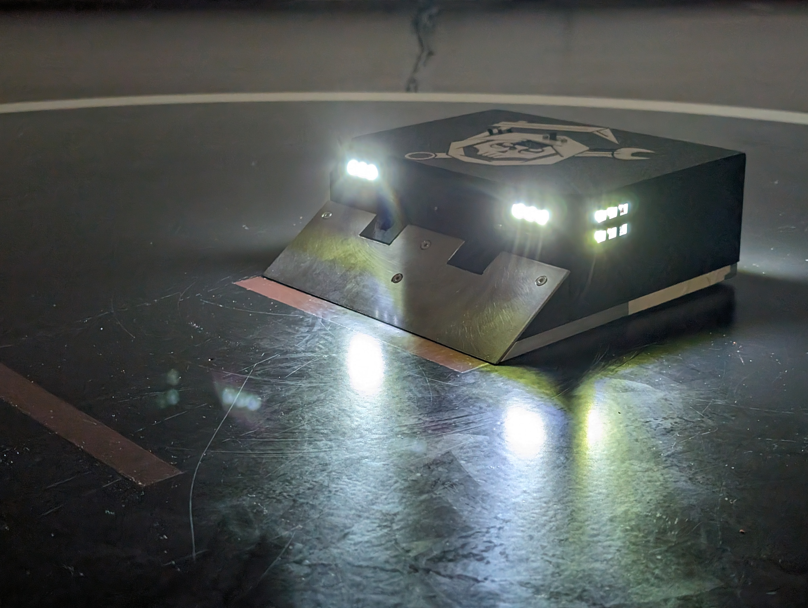
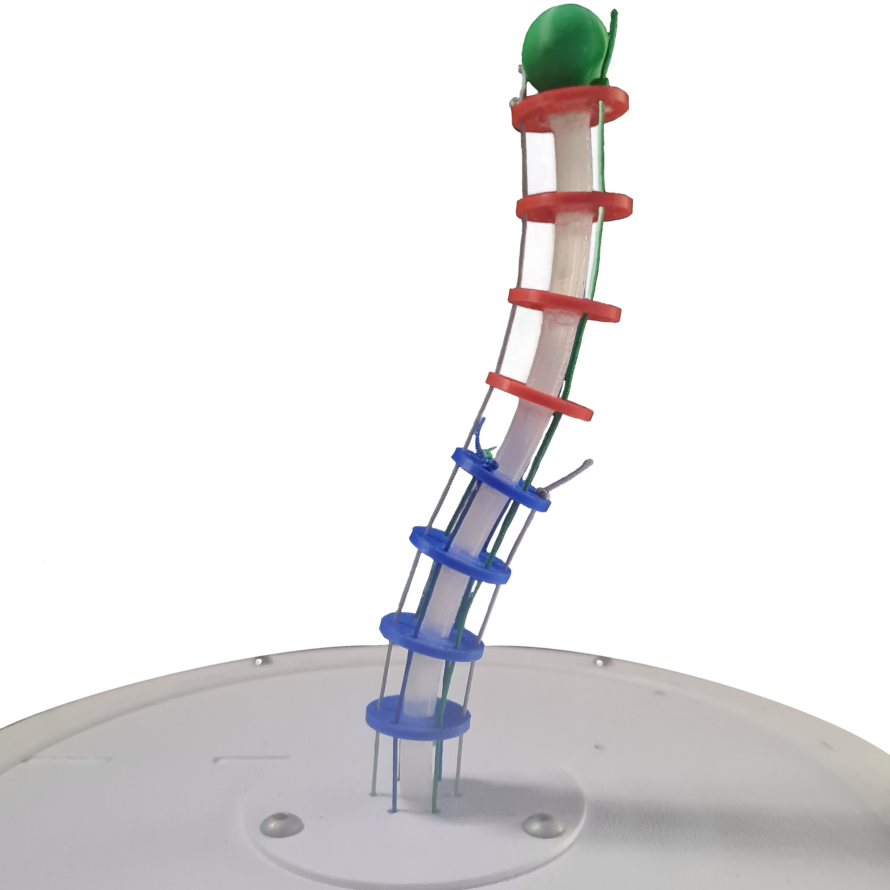

 |
MREapers SumoBot - RoboRingout2024MREapers is a team of motivated students developing an autonomous sumobot to compete in the RoboRingout2024 competition. Using an Arduino microcontroller, time-of-flight sensors and a differential driven kinematic, the robot was designed with a simple but efficient state machine to autonomously outmaneuver its opponents and push them out of the arena. As a result, the MREapers sumobot placed fourth in the competition against other teams of austrian universities. |
MREapers SumoBot - RoboRingout2024MREapers ist ein Team motivierter Studenten, die einen autonomen Sumobot entwickelten, um am Wettbewerb RoboRingout2024 teilzunehmen. Mit Hilfe eines Arduino Mikrocontrollers, Time-Of-Flight Sensoren und einer differenziellen Kinematik wurde der Roboter mit einer einfachen, aber effizienten Zustandsmaschine ausgestattet, um seine Gegner autonom auszumanövrieren und sie aus der Arena zu drängen. Damit belegte der MREapers-Sumobot im Wettbewerb gegen andere Teams österreichischer Universitäten den vierten Platz. |
 |
Tendon-driven continuum robot - Master ThesisThis work focuses on evaluating state of the art kinematic models for continuum robots based on their accuracy and computational efficiency. The models are tested on a prototype of a tendon-driven continuum robot to determine which model is best suited for predicting the prototypes kinematic behaviour. |
Sehnengetriebener Kontinuum-Roboter - MasterarbeitDiese Arbeit konzentriert sich auf die Evaluierung häufig verwendeter kinematischer Modelle für Kontinuum-Roboter auf Grundlage der Genauigkeit und des Rechenaufwands. Die Modelle werden an einem Prototypen eines sehnengetriebenen Kontinuum-Roboter getestet, um herauszufinden, welches Modell am besten geeignet ist für die kinematische Struktur des Roboters. |
 |
Soft bionic hand - Bachelor ThesisThis work presents the development and production of a pneumatically operated bionic hand. This prototype is made of soft materials and using PneuFlex Soft actuators as fingers. The concept was tested for functionality in a series of tests. In addition, alternative concepts are shown and evaluated which make it possible to control the actuators more precisely. |
|
Softe bionische Hand - BachelorarbeitIn dieser Bachelorarbeit wird die Entwicklung und Fertigung einer pneumatisch betriebenen bionischen Hand vorgestellt. Dieser Prototyp besteht aus soften Materialien und PneuFlex Soft-Aktuatoren werden als Finger verwendet. In einer Testreihe wurde das Konzept auf Funktionalität geprüft. Zusätzlich werden alternative Konzepte aufgezeigt und bewertet, die es ermöglichen, die Aktuatoren nicht nur in der Ruheposition, sondern auch in anderen gewünschten Positionen zu halten. |
 |
Autonomous Mobile Robot - AMRThis project involves the development and construction of an autonomous mobile robot. The robot is equipped with an Intel NUC and various sensors for environmental detection and state estimation. This includes a Velodyne 3D LiDAR sensor and two IFM cameras for color and depth images. The communication is based on a CAN bus and a software-sided ROS pipeline. |
|
Autonomer mobiler Roboter - AMRDieses Projekt umfasst die Entwicklung und den Bau eines autonomen mobilen Roboters. Ausgestattet ist dieser mit einem Intel NUC und diverser Sensorik zur Umgebungserfassung. Dazu zählt ein Velodyne 3D-LiDAR Sensor, sowie zwei IFM Kameras für Farb- und Tiefenbild. Die Kommunikation basiert auf einem CAN-Bus und einer softwareseitigen ROS Pipeline. |
Numerical inverse kinematics - ARW2023In this work the inverse kinematic problem is approached using an on-manifold optimization scheme based on the Levenberg-Marquardt algorithm, including a technique that can be used for auto-differentiation on arbitrary serial open chains. An open-source implementation based on the Matlab robotics-toolbox is provided and tested on industrial manipulators. |
Numerische inverse Kinematik - ARW2023In dieser Arbeit wird das Problem der inversen Kinematik unter Verwendung eines Optimierungsschemas auf der Mannigfaltigkeit angegangen. Die Methode basiert auf dem Levenberg-Marquardt Algorithmus, einschließlich einer Technik, die zur automatischen Differenzierung beliebiger serieller offener Ketten verwendet werden kann. zusätzlich wird eine Open-Source-Implementierung basierend auf der Matlab-Robotik-Toolbox bereitgestellt und auf industriellen Manipulatoren getestet. |